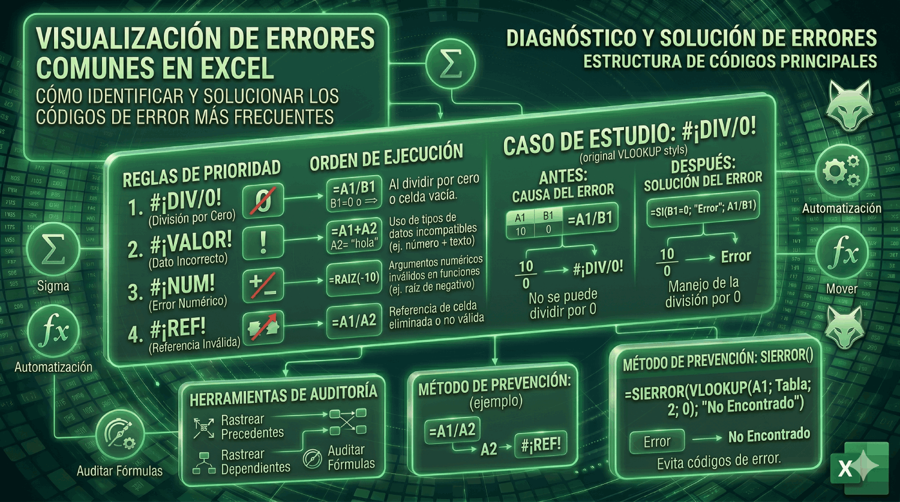

Errores Comunes en Excel (El Diccionario del Terror)
No te asustes cuando veas un error. Aprende a diagnosticar y corregir tus propias fórmulas como un profesional.

¿Por qué ocurren los errores?
Ver un error lleno de símbolos extraños como #¡DIV/0! o #¡REF! puede ser frustrante. Sin embargo, estos errores son en realidad "mensajes de ayuda" de Excel diciéndote exactamente qué salió mal.
A continuación, exploraremos los errores clásicos, qué significan y cómo puedes solucionarlos de forma independiente.
Qué significa: Estás intentando dividir un número entre cero (0) o entre una celda vacía.
Cómo solucionarlo: Revisa el divisor (la parte inferior de la división). Asegúrate de que no sea cero. Si esperas que a veces la celda esté vacía, puedes usar la función SI.ERROR para ocultar el mensaje.
Qué significa: "No Disponible". Es el error más común al usar funciones de búsqueda como BUSCARV o BUSCARX. Significa que Excel no pudo encontrar el valor que le pediste que buscara.
Cómo solucionarlo: Verifica que el valor que buscas realmente existe en tu base de datos. También revisa si hay espacios accidentales al final del texto (ej. "Juan " vs "Juan").
Qué significa: Excel esperaba un tipo de dato específico (como un número) pero encontró otro (como texto). Ocurre mucho cuando intentas sumar una celda que contiene letras o palabras.
Cómo solucionarlo: Revisa las celdas a las que hace referencia tu fórmula. Asegúrate de no estar sumando, multiplicando o restando celdas que contienen texto.
Qué significa: "Referencia inválida". Este es el error destructivo. Significa que una fórmula hace referencia a una celda que fue eliminada (borraste toda la fila o columna) o pegaste algo encima que rompió la referencia.
Cómo solucionarlo: Si acabas de borrar una columna, presiona Ctrl + Z para deshacer. Si el error ya está allí, tendrás que editar la fórmula y volver a seleccionar la celda correcta.
Qué significa: Excel no reconoce el texto en tu fórmula. Generalmente ocurre porque escribiste mal el nombre de la función (ej. =PROMEDIOO(A1:A5) en lugar de =PROMEDIO(...)).
Cómo solucionarlo: Revisa la ortografía de la función. Si estás escribiendo un texto dentro de una fórmula, recuerda que siempre debe ir entre comillas dobles (ej. "Hola").
Qué significa: Ocurre cuando un cálculo produce un número demasiado grande o demasiado pequeño para que Excel lo maneje, o cuando pasas un argumento numérico inválido a una función (como la raíz cuadrada de un número negativo).
Cómo solucionarlo: Revisa que los números de la ecuación sean lógicos y que estés usando la fórmula matemática adecuada para tu objetivo.
El salvavidas: La función SI.ERROR
Una vez que sabes por qué ocurren los errores, puedes manejarlos elegantemente. La función SI.ERROR(tu_formula; "Mensaje personalizado") te permite mostrar un texto bonito (o una celda en blanco) en lugar de un feo error, ideal para reportes y dashboards.